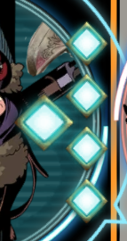

Patch 3.5 – Session 25
Patch 3.5 – Session 25
 Système
Système
 Le système de jeu, D&D5e, a été mis à jour (5.1.10 → 5.2.4).(MJ) Il est désormais possible de diminuer les restrictions concernant les déplacements de tokens, tout en conservant l'automatisation des terrains difficiles/dangereux.
Le système de jeu, D&D5e, a été mis à jour (5.1.10 → 5.2.4).(MJ) Il est désormais possible de diminuer les restrictions concernant les déplacements de tokens, tout en conservant l'automatisation des terrains difficiles/dangereux.- L'interface BG3 a été mise à jour.Il s'agit d'une migration complète de l'ancienne version du module à la nouvelle. Aucun mécanisme de migration automatique n'était proposé, vos barres ont donc été reproduites à la main sur la nouvelle version, ce qui peut avoir entraîné des oublis.Il est désormais possible de créer des pages additionnelles d'interface.
- Des modifications ont été apportées à la jauge de PA afin de prendre en charge les compétences débloquées au niveau 5 par certaines classes.La jauge peut désormais afficher 5 PA. (Cliquez sur l'image pour l'agrandir)Le 5ème PA n'est affiché que lorsque les conditions sont réunies (compétence active + 4 PA).Le 5ème PA sera consommé en priorité lorsque c'est possible, sinon, il sera conservé pour être utilisé en dernier, faites donc attention aux conditions spécifiques d'utilisation de ce PA (par exemple, aptitudes de Lansquenet uniquement pour le PA bonus d'Avant-garde, ou Foncer / Se désengager uniquement pour le PA bonus de Justice rapide).
- Le bandeau de rappel de fin du tour s'adapte désormais à la taille de l'écran.
Classes
 Souverain
Souverain
- L'effet de l'aptitude "Escrime de cour" a été clarifié. De plus, une variante nommée "Tir de cour" a été ajoutée pour les armes à feu.
 Lansquenet
Lansquenet
- L'aptitude Avant-garde est désormais catégorisée comme une aptitude spéciale, plutôt qu'un passif.
Codex
- La section "Personnages Non-Joueurs" a été modifiée pour mieux utiliser l'espace disponible à l'écran et afficher plus de personnages à la fois.
- Les personnages suivants ont été ajoutés à la section "Personnages Non-Joueurs" : Agata, Conrad, Edie, Flaudia, Gutrune, Hypatia, Iskar, Lyra, Missy, Olympia, Seyna, Tailos, Vulk et ???.